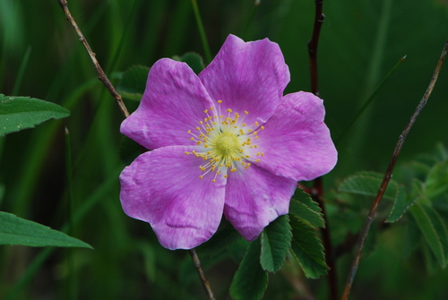

Eristalis stipator
Eristalis stipator insect
Drone flies. Mostly Holarctic natives, but see E. arbustorum below, and E. tenax is already flagged introduced in the catalogue.
18 documented plant relationships.
sips nectar at
 Thomas Koffel, some rights reserved (CC BY), uploaded by Thomas Koffel") Alpine AsterAster alpinus
Alpine AsterAster alpinus Boreal YarrowAchillea borealis
Boreal YarrowAchillea borealis Dendroica cerulea, some rights reserved (CC BY)") Canada AnemoneAnemonastrum canadense
Canada AnemoneAnemonastrum canadense Douglas Goldman, some rights reserved (CC BY-SA), uploaded by Douglas Goldman") Canada GoldenrodSolidago canadensis
Canada GoldenrodSolidago canadensis Douglas Goldman, some rights reserved (CC BY-SA), uploaded by Douglas Goldman") ChokecherryPrunus virginianaGumweedGrindelia squarrosa
ChokecherryPrunus virginianaGumweedGrindelia squarrosa Joe-Pye WeedEutrochium maculatumMany-flowered Aster (Tufted White Prairie Aster)Symphyotrichum ericoides
Joe-Pye WeedEutrochium maculatumMany-flowered Aster (Tufted White Prairie Aster)Symphyotrichum ericoides Syd Cannings, some rights reserved (CC BY), uploaded by Syd Cannings") Prairie CrocusPulsatilla nuttalliana
Prairie CrocusPulsatilla nuttalliana
Prairie RoseRosa arkansanaShrubby CinquefoilDasiphora fruticosa aarongunnar, some rights reserved (CC BY), uploaded by aarongunnar") Smooth AsterSymphyotrichum laeve
Smooth AsterSymphyotrichum laeve Matt Lavin, some rights reserved (CC BY-SA)") Stiff GoldenrodSolidago rigidaStiff Sunflower (Rhombic-leaved Sunflower)Helianthus pauciflorusUmbrella BuckwheatEriogonum umbellatum
Stiff GoldenrodSolidago rigidaStiff Sunflower (Rhombic-leaved Sunflower)Helianthus pauciflorusUmbrella BuckwheatEriogonum umbellatum Pohled 111, some rights reserved (CC BY-SA)") Wild ChivesAllium schoenoprasum
Wild ChivesAllium schoenoprasum Tom Norton, some rights reserved (CC BY), uploaded by Tom Norton")